NebulaScope — Manuel de l’utilisateur
Version 0.94. Ceci est le guide complet ; pour un démarrage rapide, voir le README. Chaque raccourci clavier cité ici est un réglage par défaut — tous sont reconfigurables dans Préférences ▸ Raccourcis (stockés dans shortcuts.ini, dont l’emplacement est indiqué dans la boîte de dialogue).
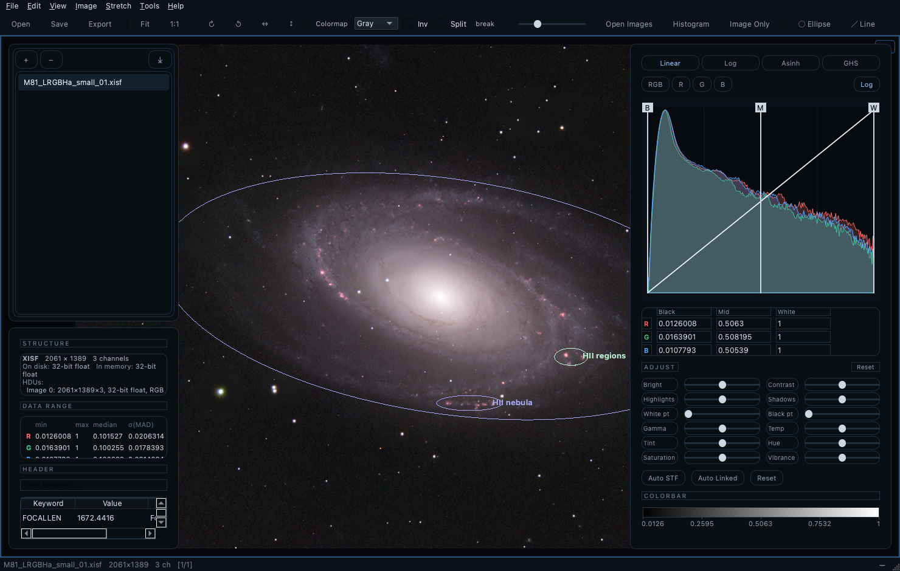
1. Ouvrir des images
Formats lus : FITS (.fits .fit .fts .fz, y compris les fichiers multi-HDU et les images compressées par tuiles ; les données entières sont mises à l’échelle via BSCALE/BZERO), XISF de PixInsight (.xisf, y compris les propriétés d’image et les solutions astrométriques), et JPEG / PNG / TIFF / WebP. Tout est promu en flottant 32 bits au chargement : le pipeline entier suit un seul chemin de code, et les pixels vides NaN/Inf sont respectés de bout en bout.
Pour ouvrir : - Fichier ▸ Ouvrir… ou le bouton Ouvrir de la barre d’outils (la sélection multiple fonctionne). - Glisser-déposer sur la fenêtre — ou sur l’icône de l’application (macOS ; le bundle déclare les types de fichiers, donc Ouvrir avec du Finder propose aussi NebulaScope). - Fichier ▸ Ouvrir récent — les 10 dernières images et les 5 derniers fichiers d’annotations. - Ligne de commande — voir §13. - Les FITS multi-HDU apparaissent dans la liste d’images comme une entrée dépliable, une ligne par HDU image ; cliquez sur le HDU voulu.
Une image nouvellement ouverte s’affiche immédiatement — dans la première cellule de vue vide si la vue est divisée, sinon dans la vue active. L’ouverture de plusieurs images remplit les cellules vides dans l’ordre donné (ligne de commande, sélection du Finder, boîte de dialogue), une image par cellule, jusqu’à épuisement des cellules. La liste ne contient chaque image qu’une seule fois : rouvrir une image déjà listée sélectionne sa ligne existante au lieu d’ajouter un doublon (la barre d’état le signale). À la première visualisation une image reçoit une simple rampe linéaire min→max (prévisible, sans conjecture) ; appuyez sur Auto STF pour un étirement renforcé (§3). Exception : un XISF portant l’étirement d’écran enregistré par l’application productrice (l’élément DisplayFunction — PixInsight y écrit sa STF) s’ouvre avec cet étirement appliqué : une image traitée dans PI apparaît comme sur l’écran de PI ; la barre d’état le signale, et Réinitialiser revient à la rampe simple. Un point blanc au-delà du maximum des données (la convention de PI le place sur le conteneur normalisé [0,1]) est recalé sur la plage des données en forme close — courbe identique sur les données, à un facteur de luminosité uniforme près — afin que les poignées de l’histogramme et les champs de valeur restent pleinement utilisables (dérivation dans l’annexe du chapitre Transport de couleurs : la famille MTF est fermée par restriction-renormalisation). Si la STF enregistrée est non liée (fortement par canal — elle égalise les canaux et annule visuellement une balance étalonnée comme celle de SPCC), la barre d’état le signale et suggère Maj+U, l’étirement automatique lié qui préserve l’étalonnage.
Les images couleur one-shot (OSC) sont dématriçées automatiquement. Une image mono dont l’en-tête porte un motif de Bayer (BAYERPAT, en honorant XBAYROFF/YBAYROFF — écrits par ASIAIR, ASICAP, NINA, SGP, …) s’ouvre en RVB. Image ▸ Dématriçage le contrôle image par image : Détection automatique, un motif forcé (pour les images aux mots-clés absents ou erronés), ou Désactivé pour inspecter la mosaïque brute. L’algorithme est un choix global — dans le même menu ou dans les Préférences : RCD (par défaut ; directionnel, le meilleur sur les étoiles — validé contre le RCD de Siril), Bilinéaire, ou Superpixel (chaque cellule 2×2 devient un pixel RVB : demi-taille, zéro artefact, le plus rapide). Les changements de dématriçage (mode de motif ou algorithme) sont annulables (⌘Z). Le dématriçage a lieu au chargement — la barre d’état note la décision (p. ex. dématricé RGGB, RCD), le panneau Infos l’enregistre, et le rechargement automatique (§7) comme la mémoire d’étirement par image s’y composent naturellement.
Mosaïques sans aucune métadonnée — les outils de capture planétaire et solaire (FireCapture, SharpCap, …) peuvent déverser la mosaïque brute du capteur dans un simple PNG ou TIFF en niveaux de gris, où aucun en-tête n’annoncera jamais de motif de Bayer. NebulaScope renifle les pixels : une mosaïque se trahit statistiquement (les voisins immédiats diffèrent bien plus que les voisins de même couleur à deux pixels, et les deux sites verts s’accordent sur une diagonale de la cellule 2×2). Quand une image mono sans métadonnées ressemble à une mosaïque non décodée, la barre d’état le signale et nomme les deux motifs candidats compatibles avec la diagonale verte détectée — rouge et bleu ne se distinguent pas sans connaître la scène : choisissez celui qui rend bien (le mauvais jumeau donne un Soleil bleu). Comme un flux de capture provient d’un seul capteur, Image ▸ Dématriçage ▸ Appliquer le choix à toute la liste applique ensuite votre motif forcé à toutes les images listées en une action (scripts : debayer bggr rcd all).
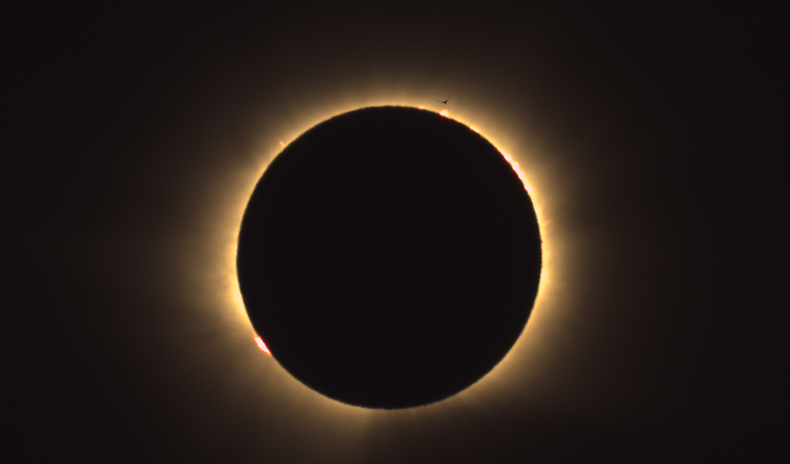
La session de capture pour laquelle cette fonction est née : l’éclipse totale de Soleil du 12 août 2026, observée depuis l’Espagne. Les phases partielles sont arrivées en PNG niveaux de gris sans métadonnées — des mosaïques BGGR brutes que le renifleur a signalées à l’ouverture — tandis que la totalité, capturée en FITS avec BAYERPAT, s’est décodée automatiquement. Des protubérances roses bordent le limbe lunaire ; au-dessus de l’une d’elles, un martinet traverse la couronne interne.
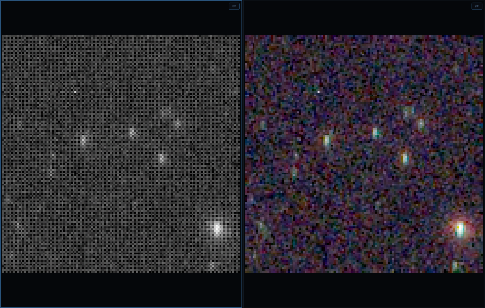
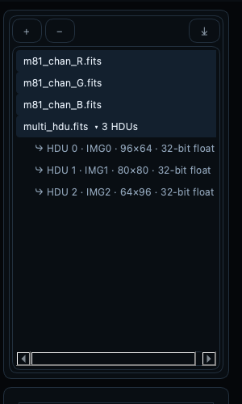
2. Le pipeline d’affichage
Les données brutes ne sont jamais modifiées par les opérations d’affichage. Chaque image traverse :
- Fenêtrage — points noir/blanc par canal à l’intérieur de la plage des données.
- Fonction de transfert — Linéaire (avec tons moyens), Log, Asinh ou GHS, appliquée en pleine précision flottante sur la fenêtre (les 4096 échantillons de la LUT et tous les niveaux de sortie couvrent la fenêtre — aucune postérisation, si étroite soit-elle).
- Ajustements — contrôles de tonalité et de couleur post-étirement (§4).
- Palette de couleurs (images mono) — table de fausses couleurs.
- Conversion 8 bits avec tramage — supprime les bandes dans les dégradés doux.
Le rendu est asynchrone : le déplacement d’un contrôle reste fluide, l’image rattrape au rythme du rendu (les positions intermédiaires sont sautées, jamais mises en file).
3. Histogramme et contrôle de l’étirement
Le panneau Histogramme (bascule F3) est le cœur de l’outil :
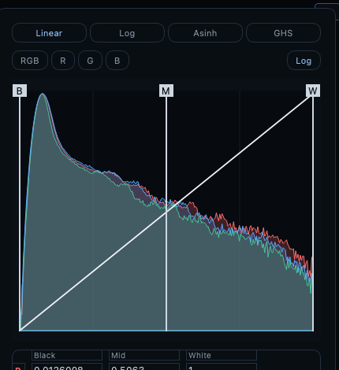
- Fonctions d’étirement — onglets Linéaire / Log / Asinh / GHS (touches : I / L / S / G).
- Linéaire joue le rôle du fenêtrage : faites glisser B (noir), M (tons moyens), W (blanc) directement sur le tracé. Les images RVB affichent en outre les B/M/W propres à chaque canal en fines lignes colorées — saisissez-en une dans le corps du tracé pour déplacer ce canal seul ; les poignées étiquetées de la bande supérieure déplacent les trois ensemble.
- Log et Asinh se composent avec la fenêtre linéaire ; le tracé zoome sur la fenêtre pour que leurs contrôles utilisent toute la largeur.
- GHS (étirement hyperbolique généralisé) : curseurs D (intensité) et b (focalisation locale), plus les poignées déplaçables SP (point de symétrie — où le contraste se concentre) et LP/HP (protection des ombres/hautes lumières), tous définis dans la fenêtre comme pour les autres modes non linéaires.
- Canaux — RVB (liés) ou pastilles individuelles R / V / B.
- Champs de valeur éditables — saisie numérique exacte ; les images RVB disposent d’une grille 3×3 complète (R/V/B × noir/médian/blanc) en unités des données brutes.
- Le bouton Axe log bascule l’échelle logarithmique des fréquences de l’histogramme.
- Auto STF (U) — étirement automatique par canal (fond → ~0,25).
- Auto STF (lié) (Maj+U) — un étirement partagé issu des statistiques regroupées ; préserve la balance des couleurs (à utiliser sur des données étalonnées en couleur).
- Réinitialiser (R) — retour à la fenêtre linéaire simple (efface aussi les ajustements).
- Recharger l’original (⌘⇧R, menu Affichage) — redécodage depuis le disque avec les règles de première visualisation (fonction d’affichage enregistrée si le fichier en porte une, sinon rampe simple), en oubliant la mémoire d’étirement de l’image : exactement comme si NebulaScope venait d’être lancé et l’image ouverte.
- Chaque geste d’étirement ou d’ajustement est annulable (⌘Z) : les modifications se regroupent en une étape d’historique par geste, et l’historique remonte jusqu’à l’état de chargement — à travers les Auto STF, les collages, les ajustements de transport et Recharger l’original lui-même.
- Appliquer à tout (Maj+A) — partage l’étirement courant (+ ajustements) avec chaque image de la liste : chacune l’applique à son chargement. Conçu pour les lots d’une même session d’acquisition — réglez une image, partagez, puis parcourez le reste en blink. En ligne de commande :
--shared-stf(étire automatiquement la première image et la partage) ; dans les scripts :stfall. Pour un sous-ensemble — ou pour un collage normalisé qui se recale sur les statistiques propres de chaque image — utilisez Copier l’étirement, sélectionnez des images dans la liste, puis clic droit ▸ Coller l’étirement. - La légende barre de couleurs montre le transfert courant sur la fenêtre, avec des graduations en unités réelles des données ; elle suit la palette active et les ajustements — ce que montre la barre est l’apparence exacte d’un pixel de cette valeur.
Copier/coller l’étirement (menu Étirement ; ⌘⌥C / ⌘⌥V) : copie l’étirement complet. Le collage Normalisé recale la fenêtre sur les statistiques médiane/MAD propres de la cible (le bon choix pour comparer des expositions ou filtres différents) ; Absolu transporte la fenêtre exacte en unités des données.
Mémoire d’étirement par image — chaque image se souvient de son dernier étirement (et de ses ajustements) et les réapplique quand vous y revenez.
4. Ajustements (post-étirement)
La section AJUSTER se trouve sous les contrôles d’étirement — toujours visible, dans chaque mode, avec son propre Réinitialiser (l’étirement n’est pas touché). Les douze curseurs s’appliquent aux valeurs d’affichage étirées, et se composent donc à l’identique avec Linéaire/Log/Asinh/GHS :
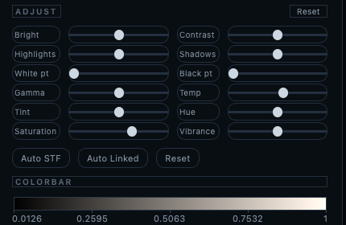
| Colonne gauche | Colonne droite |
|---|---|
| Luminosité | Contraste |
| Hautes lumières | Ombres |
| Point blanc | Point noir |
| Gamma | Température |
| Teinte (tint) | Teinte (hue) |
| Saturation | Vibrance |
- Tonalité (Luminosité…Gamma) : courbes par canal, épinglées aux extrémités noir/blanc quand c’est pertinent ; reflétées en direct dans la courbe de transfert.
- Couleur (Température…Vibrance) : images RVB uniquement. La Vibrance est une saturation pondérée vers les pixels peu saturés — elle avive les nébulosités sans écrêter la couleur des étoiles.
- Cliquez sur un curseur, puis utilisez la molette pour des pas fins (le survol seul ne modifie jamais rien).
- Les ajustements sont par image — réinitialisés à la première visite, mémorisés par image dans la session, et persistés dans le fichier annexe d’annotations (§9) avec l’état d’affichage complet ; un fichier annexe restaure l’apparence exacte à la première visualisation de la session suivante.
5. Palettes de couleurs (images mono)
Gris, Chaleur, Viridis, Magma, Inferno, Cividis — plus les palettes classiques de SAOImage DS9 (a, b, bb, he, cool, rainbow, standard, et les palettes à paliers i8, aips0 et sls), reproduites depuis les points de contrôle de référence de DS9 : le rendu est identique à DS9. Toutes se choisissent dans la barre d’outils ; scripts : cmap <nom>. Deux modificateurs composables fonctionnent avec toutes les palettes :
- inv() — inversion complète.
- split(t) — sous le seuil t la palette est inversée, au-dessus elle est normale ; excellent pour percevoir les structures ténues du fond. Seuil réglable.
Les images RVB ignorent la palette (le sélecteur est désactivé).
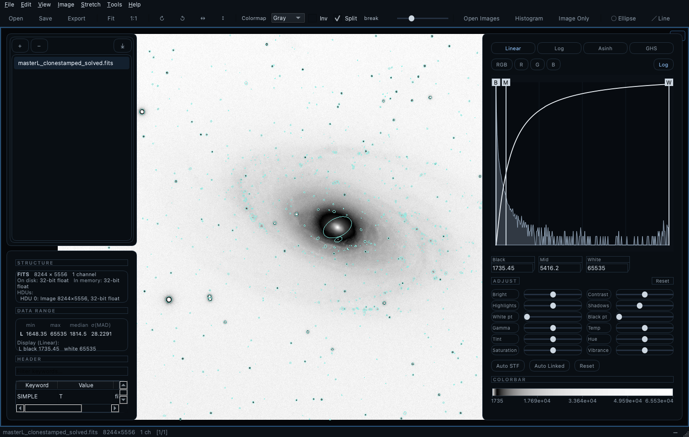
6. Inspection
À la souris (dans toute vue) : - Glisser gauche — zoom élastique sur la région tracée. - Molette — zoom au curseur (Maj+molette = pas 5× plus fins). - Glisser droit / molette / Maj+gauche — panoramique. - Clic droit — menu contextuel (§10). - Survol — la barre d’état affiche (x, y), les valeurs brutes par canal, et AD/Déc quand une solution astrométrique existe.
Commandes de zoom : Ajuster à la vue et 1:1 (touche 1) dans le menu Affichage et la barre d’outils — et le zoom clavier pour travailler sans souris : > / < par pas de 10 %, . / , par pas de 3 % (les deux pourcentages sont réglables dans les Préférences), centrés sur la vue. Quand la vue image a le focus, les flèches font un panoramique ; quand la liste d’images a le focus, ↑/↓ parcourent la liste (le blink lui-même reste sur Espace/Maj+Espace).
Le panneau Infos (P ou F4) montre les dimensions, le format des pixels, min / max / médiane / MAD par canal, la structure des HDU FITS, et l’en-tête complet (cartes FITS ou propriétés XISF) dans un tableau filtrable et copiable.
7. Sessions, blink et liste d’images
- Espace / Maj+Espace — image suivante / précédente, en boucle. Le zoom et le panoramique sont conservés entre images de même taille : on peut donc faire clignoter une petite région.
- Maj+L (ou F2) bascule la liste d’images ; C ferme les images surlignées (seulement la courante si rien d’autre n’est sélectionné ; fermer la dernière vide toutes les vues). Fermer une image libère tout ce que l’application détient pour elle — pixels décodés, copies par vue, mémoire d’étirement — une longue session de tri n’accumule donc pas de RAM. Si une image en cours de fermeture a des annotations non enregistrées, une seule invite couvre tout le lot : Enregistrer les annotations écrit le fichier annexe par défaut de chaque image concernée (en l’écrasant), Ignorer et fermer abandonne les modifications, Annuler interrompt la fermeture pour traiter les images une à une.
- Gestion de la liste : + ajoute, − / menu contextuel Fermer et retirer de la liste (même fermeture-libération que C), glisser pour réordonner, export (⤓) et Fichier ▸ Importer une liste d’images… recharge une liste sauvegardée (un chemin par ligne, commentaires
#, chemins relatifs résolus par rapport au fichier de liste).--listfait de même en ligne de commande. Vider la liste et tout fermer (⌥C, menu Affichage ou menu contextuel de la liste) vide la liste et toutes les vues d’un seul geste. - Les résultats en mémoire (combinaison, transport, recadrage) sont marqués dans la liste ; Enregistrer les données sous… — ou Enregistrer l’image étirée sous… — transforme l’entrée en fichier sauvegardé (nom, fichiers annexes et état par image suivent, et le rechargement automatique se met à surveiller le fichier).
- Tri par blink (culling) — chaque ligne de la liste porte une coche de conservation (cochée par défaut). Parcourez une session en blink avec Espace/↓ et appuyez sur B pour rejeter la mauvaise image sous vos yeux — le dématriçage et l’édition STF en direct restent disponibles en permanence, ce qui distingue précisément ce blink des autres. B et les coches tiennent compte de la sélection : surlignez plusieurs lignes et B les bascule en groupe (toutes cochées ; il ne décoche que lorsque toutes le sont déjà), et cliquer une coche dans une sélection multiple re-coche toute la sélection — un clic sur une ligne non sélectionnée reste individuel. Agissez ensuite sur les coches depuis le menu clic droit de la liste : Cocher/Décocher la sélection, Trier : cochées d’abord, Déplacer les cochées/décochées vers… (les fichiers partent avec leurs annexes d’annotations, et la liste les suit à leur nouvel emplacement), et Retirer les cochées/décochées de la liste. Scriptable via
tag,tagsort,tagremove,tagmove(§13) pour des chaînes de tri automatisées. - Rechargement automatique (Affichage ▸ Recharger les fichiers modifiés, actif par défaut) : quand un autre programme — PixInsight, Siril, GraXpert, … — écrase un fichier listé sur le disque, NebulaScope le redécode automatiquement (dans chaque vue qui l’affiche, active ou non). La mémoire d’étirement s’applique aux données rechargées, et zoom et panoramique survivent si les dimensions n’ont pas changé. Gardez NebulaScope ouvert à côté de votre suite de traitement : chaque sauvegarde apparaît dès qu’elle touche le disque.
8. Géométrie : rotation et miroir
Menu Image / barre d’outils : - Rotation 90° horaire / antihoraire ( ] / [ ) et Miroir horizontal / vertical (⌘H / ⌘J) — sans perte, exacts. - Rotation d’un angle… (⌘R) — la boîte de rotation : un cadran d’angle manipulable (Maj = fin, molette = ±1°, double-clic = 0°), un champ de précision, et un aperçu en direct. Appliquer tourne sans fermer (pour tâtonner). L’angle est absolu : toute nouvelle rotation rééchantillonne une seule fois depuis les données d’origine — essayer de nombreux angles ne dégrade jamais l’image. Rééchantillonnage bilinéaire ; les coins découverts deviennent vides (NaN). - ⬆ Nord en haut (dans la boîte, si l’image est résolue) — un clic règle l’angle qui met le nord céleste en haut / la ligne de Déc centrale à l’horizontale.
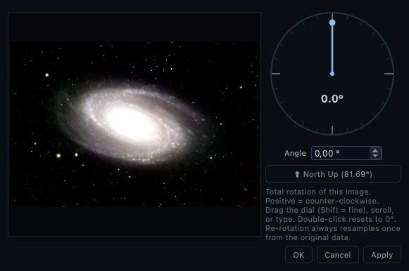
Tout suit les pixels à travers chaque transformation : les annotations, la solution astrométrique (pixel de référence + matrice CD) et les calibrations de liaison de vues. Les historiques d’orientation sont normalisés — revenir en arrière restaure toujours exactement le canevas d’origine (les bordures d’expansion ne s’accumulent jamais). L’orientation est enregistrée par image (et dans les fichiers annexes) : une image se rouvre comme vous l’aviez laissée. Note : après une rotation arbitraire, Enregistrer les données sous écrit des pixels rééchantillonnés — faites la photométrie sur des données non tournées.
Recadrer sur la région visible (Maj+C, menu Image ; scripts : crop x y w h ou crop view) : cadrez la région en zoomant — exactement comme pour une capture d’écran — et recadrez-la dans une NOUVELLE entrée de liste en mémoire, en pleine profondeur de bits ; l’original est intouché. La solution astrométrique survit exactement : un recadrage ne fait que translater le pixel de référence (CRPIX), et la solution recalée est écrite dans l’en-tête du recadrage en cartes FITS standard — même quand la source ne la portait qu’en propriétés XISF de PixInsight. Les annotations se translatent avec les pixels, l’étirement courant est conservé, et Enregistrer les données sous… écrit le résultat en FITS/XISF/TIFF 16 bits. Annulable comme tout résultat synthétique.
9. Annotations
Un pur calque vectoriel — jamais rastérisé dans les données.
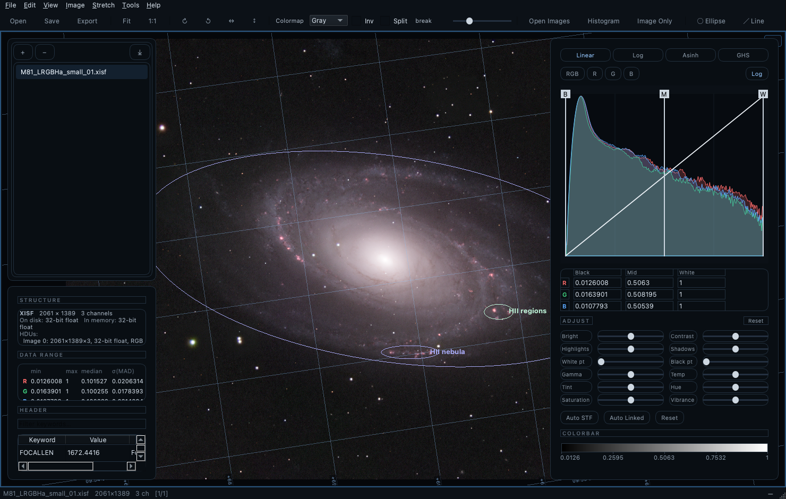
- Dessiner — outils de la barre : ellipse (glisser), segment (glisser ; l’étiquette se place au-delà du point de départ, sans jamais croiser le segment), texte (clic).
- Éditer — clic pour sélectionner (poignées : redimensionnement d’axe/extrémité, glisser le corps pour déplacer), double-clic pour éditer texte et couleur, Suppr pour retirer, ⌘⇧C / ⌘⇧V copier / coller-au-curseur, annuler/rétablir complet.
- Enregistrer les annotations et l’affichage (menu Fichier, ou menu contextuel de l’image) est toujours disponible : outre les formes et l’historique de rotation/miroir, le fichier annexe capture l’état d’affichage entier — fonction de transfert, fenêtrage noir/milieu/blanc par canal, paramètres GHS, palette et ajustements — « garder cette apparence » tient donc en un enregistrement. C’est ainsi qu’un transport de couleurs non destructif (§11) devient permanent : l’ajustement vit dans le fenêtrage et dans les ajustements, et les deux reviennent à l’ouverture suivante, en priorité sur les règles d’étirement automatique.
- Afficher/masquer — touche A (la grille est séparée). Charger ou importer des annotations les rend toujours visibles.
- Inverser le contraste — menu clic droit, pour les champs brillants.
- Persistance — fichiers annexes JSON (
<image>_annotation.json), chargés automatiquement à l’ouverture (réglable dans les Préférences). Enregistrer écrase sans demander ; Enregistrer sous… demande. Les annexes portent aussi l’orientation de l’image et l’état d’affichage complet (clédisplay: étirement, fenêtrage, GHS, palette, ajustements — §4) ; l’enregistrement fonctionne sans aucune forme. Les annotations non sauvegardées avertissent à la fermeture. (Les annexes antérieures à la v0.95 ne portaient que les ajustements ; ré-enregistrez une fois pour capturer aussi l’étirement.) - Import SExtractor — Outils ▸ Importer un catalogue SExtractor… lit les catalogues ASCII (requiert
X_IMAGE/Y_IMAGE; utilise les ellipsesA/B/THETA_IMAGEsi présentes), avec facteur d’échelle des ellipses, filtrage parFLAGS, coloration parCLASS_STAR, et étiquettesNUMBER/MAG_AUTO. Les détections se projettent correctement sur les vues tournées.
10. Astrométrie
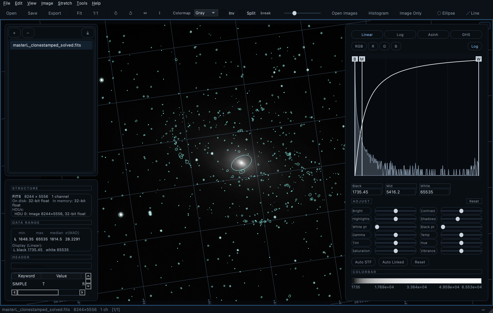
Les solutions sont lues depuis les mots-clés WCS FITS (TAN) et depuis les propriétés XISF PCL:AstrometricSolution de PixInsight ; les images non résolues se rabattent sur les mots-clés de pointage du télescope pour des coordonnées approchées.
- Lecture au survol : AD/Déc du pixel sous le curseur.
- Grille AD/Déc (Maj+G) avec libellés de coordonnées alignés sur les axes (densité réglée dans les Préférences).
- Menu clic droit, groupé lecture / annotations / consultation / zoom : copier AD/Déc, copier la valeur du pixel, annoter ici, coller l’annotation, Consulter dans Aladin (ouvre Aladin Lite cadré à ~10× l’annotation cliquée), Identifier dans SIMBAD (recherche par cône à l’échelle de l’annotation), et Pointer Stellarium ici — pilote un Stellarium en cours d’exécution (son greffon Remote Control activé, port 8090 par défaut) vers la position céleste cliquée avec un champ correspondant : là où Aladin répond qu’est-ce que c’est, Stellarium répond où est-ce dans le ciel de ce soir depuis mon site.
11. Combiner des images
Combiner les canaux (Outils ▸ Combiner les canaux…)
Fusionne jusqu’à 7 entrées mono — R, V, B, S(II), H(α), O(III), L — en une image couleur via une matrice de combinaison linéaire :
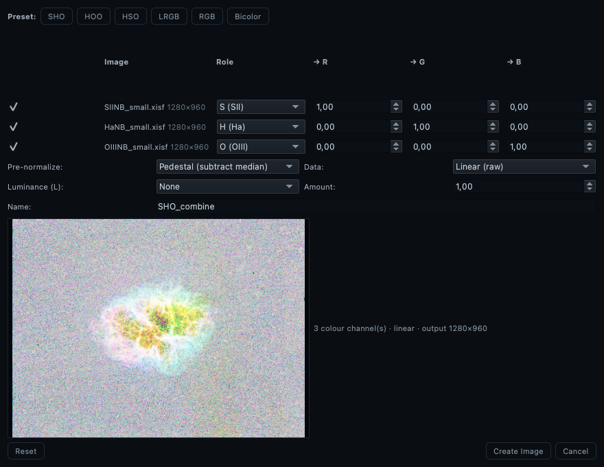
La boîte avec trois masters à bande étroite (M1) affectés S/H/O et l’aperçu en direct.
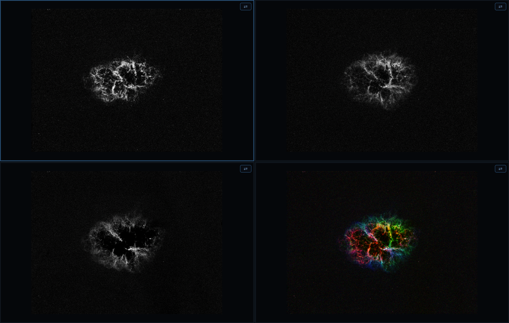
L’image créée arrive dans la première vue vide : chaque canal à côté du résultat en palette Hubble.
- Préréglages de palette : SHO/Hubble, HOO, HSO, LRVB, RVB simple, bicolore.
- Prénormalisation par canal : médiane / piédestal de fond / min-max / aucune / Tel qu’affiché — cette dernière fusionne chaque canal à travers son étirement de vue courant : ce que vous voyez est exactement ce qui se combine.
- Les deux modes de luminance (transfert de clarté propre ou addition linéaire).
- Les entrées doivent partager les dimensions (erreur claire sinon).
- Grand aperçu en direct réagissant aux poids ; bascule par canal.
- La boîte mémorise ses réglages ; Réinitialiser restaure les défauts.
- Le résultat arrive dans la première vue vide (ou la vue active), nommé d’après la palette ; enregistrez-le avec Fichier ▸ Enregistrer les données sous….
Combiner les étoiles (Outils ▸ Combiner les étoiles (screen)…)
Recompose une image sans étoiles avec une image étoiles seules par fusion screen 1 − (1−sansétoiles)(1−k·étoiles) — quasi additive dans les zones sombres, sûre vis-à-vis de la saturation dans les claires :
- Les deux images en RVB (ou les deux en mono), mêmes dimensions ; choisies dans la liste (devinées d’après les noms contenant « starless »/« star »).
- Curseur quantité d’étoiles (0–150 %) qui met les étoiles à l’échelle avant la fusion.
- Opère sur le rendu tel qu’affiché de chaque image ; aperçu en direct ; appariement mémorisé.
Transport de couleurs (Outils ▸ Transporter les couleurs d’une référence…)
Recolore l’image courante pour épouser la distribution de couleurs d’une référence (transport optimal par tranches sur les valeurs affichées) :
- Les distributions sont estimées uniquement sur les pixels visibles dans chaque vue — zoomez d’abord les deux vues sur l’objet ; le champ hors écran n’influence jamais le résultat. Les pixels saturés sont exclus (les cœurs d’étoiles ne peuvent ni ne doivent être appariés).
- Fonctionne entre modalités (p. ex. emprunter la palette d’un rendu RVB pour une image SHO). Les images tournées sont traitées dans le référentiel du disque — aucune bordure n’est incrustée. Le résultat est une nouvelle entrée de liste prête à l’affichage ; annulable.
Appliquer comme ajustement d’étirement (case de la boîte ; scripts : transport <ligne> [force] stretch [colour] ; une seconde case Ajuster aussi les réglages de couleur ajoute une étape inter-canaux — température/teinte/rotation de teinte/saturation — pour les correspondances exigeant une rotation de teinte ; théorie complète dans le chapitre Transport de couleurs) : au lieu d’écrire de nouveaux pixels, NebulaScope ajuste les points noir/médian/blanc de chaque canal pour que l’affichage épouse les couleurs transportées — totalement non destructif : rien ne peut postériser, et le bruit n’est jamais amplifié par l’application. La correspondance est proche plutôt qu’exacte (les rotations inter-canaux échappent à la famille des étirements par canal) ; la barre d’état rapporte l’erreur RMS d’ajustement par canal pour en juger. Le mode exact, qui écrit les pixels, reste disponible quand la fidélité prime sur la pureté des données.
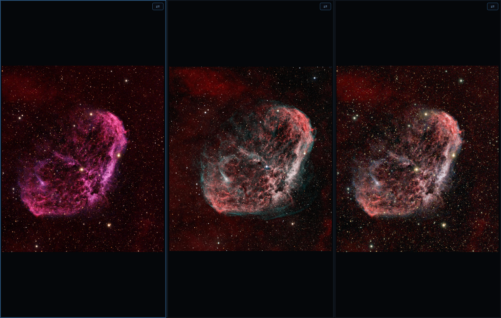
13. Ligne de commande
L’interface en ligne de commande et le langage de script restent en anglais (c’est une API stable, indépendante de la langue de l’interface — les scripts .nsc d’un utilisateur anglophone tournent à l’identique sur une machine française). Référence complète : nebulascope --run list et nebulascope --help <commande> ; voir aussi le §13 de l’édition anglaise de ce manuel et tests/smoke.nsc pour un exemple complet.
nebulascope [options] [fichiers...]
-l, --list <fichier> Charge une liste d'images sauvegardée.
--split <LxC> Divise la vue (max 5x5).
--shared-stf Étire la première image et partage cet étirement.
--lang <code> Force la langue de l'interface (en, fr, system).
--run <script> Exécute un script de commandes (tests/batch).
--run list Liste toutes les commandes de script.
-h, --help [commande] Aide — générale, ou détaillée pour une commande.Exemples : nebulascope *.fits · nebulascope --list cette-nuit.txt · nebulascope --split 1x2 lum.fits ha.fits. (macOS : invoquez le binaire à l’intérieur du bundle, ou créez un lien symbolique vers votre PATH — voir docs/BUILDING-macos.md.)
14. Export
Dans chaque boîte d’enregistrement, cliquez sur n’importe quel nom d’image existant pour adopter son nom de base — fichiers FITS, XISF ou images ordinaires ; l’extension vient toujours du format sélectionné. Cliquer M81.xisf dans un export PNG préremplit M81, enregistré M81.png ; avec le format correspondant sélectionné, le nom d’origine se reconstitue à l’identique, pour écraser ou réenregistrer.
- Fichier ▸ Enregistrer les données sous… — les données (Float32, orientation courante) : FITS, XISF, ou TIFF 16 bits. Enregistrer un résultat en mémoire renomme son entrée de liste en fichier. Interopérabilité XISF : les flottants sont normalisés dans [0,1] (la convention de PixInsight ; les mots-clés
NSSCALE/NSZEROconsignent la plage d’origine). L’enregistrement FITS préserve soigneusement les métadonnées : les valeurs gardent leur type naturel (les nombres restent numériques, pas des chaînes), et quand un XISF natif PixInsight ne porte ses métadonnées qu’en propriétés XISF, les mots-clés standard (DATE-OBS, EXPTIME, FOCALLEN, XPIXSZ, RA/DEC, INSTRUME, …) sont synthétisés à partir d’elles — unités converties là où les conventions diffèrent. Le choix de compression XISF — Zstd (la plus compacte ; retombe silencieusement sur Zlib si votre libXISF ne la gère pas), Zlib (compatibilité maximale), ou Non compressé — se fait dans la boîte d’enregistrement elle-même (activé quand le format XISF est sélectionné) ; les blocs sont mélangés par octets (byte-shuffling) pour de meilleurs taux, et le choix est mémorisé pour la session. - Fichier ▸ Enregistrer l’image étirée sous… — grave le transfert d’affichage courant (étirement + ajustements) en FITS/XISF/TIFF Float32. Même choix de compression XISF.
- Fichier ▸ Exporter la vue sous… (⌘E) — l’image affichée (étirée, avec palette) : PNG / JPEG / TIFF / WebP. Les options de format sont dans la boîte d’export elle-même — aucune fenêtre supplémentaire : profondeur 8 ou 16 bits pour PNG/TIFF (le 16 bits est construit depuis le rendu flottant — dégradés sans bandes), qualité pour JPEG/WebP ; chacune s’active avec le format correspondant.
- Fichier ▸ Exporter la région zoomée sous… (⌘⇧E) — idem, mais seulement la région visible.
- Fichier ▸ Exporter / Importer une liste d’images… — aller-retour de session (§7).
- Annotations et ajustements s’exportent via leurs fichiers annexes JSON (§9).
- Sous macOS, les deux boîtes d’enregistrement riches sont natives (
NSSavePanel) : format, profondeur/compression et qualité occupent une rangée d’accessoires native sous le navigateur de fichiers — favoris de la barre latérale, emplacements iCloud et comportements des dossiers compris. Cliquer une image listée adopte toujours son nom de base, et l’extension enregistrée suit toujours le format choisi. Les autres plateformes conservent la boîte Qt équivalente.
15. Disposition, préférences et personnalisation
- Disposition en surimpression (par défaut) : la liste d’images/panneau Infos et l’histogramme flottent en translucidité sur le canevas. O bascule vers la disposition classique en panneaux ancrés et retour. L’opacité des panneaux est une préférence — 100 % (opaque) est le plus rapide.
- Tab — mode image seule (tous les panneaux masqués ; Échap sort). Le plein écran a son propre raccourci ; ⌥F est le bouton vert au clavier : plein écran natif aller-retour sous macOS (barre de menus masquée, Espace dédié ; sous Linux/Windows, agrandit/restaure). H masque les barres de défilement et tout l’habillage des vues — bordure de cellule active et boutons de liaison — pour un canevas entièrement épuré (les panoramiques fonctionnent toujours), p. ex. pour prévisualiser un fond d’écran en plein écran.
- Préférences… (menu de l’application sur macOS) :
- Général — langue de l’interface (système / English / Français) ; couleur, taille de texte et épaisseur de trait par défaut des annotations ; densité de la grille AD/Déc ; chargement automatique des fichiers annexes ; opacité des panneaux en surimpression ; tailles des listes de fichiers récents.
- Raccourcis — le raccourci de chaque action, éditable ; stocké dans
shortcuts.ini(valeur vide = désactivé ; les conflits obsolètes sont rétablis).
- À propos — la version et le copyright viennent de
src/app/AppInfo.h(maintenu à la main), suivis de l’identifiant de compilation exact (git describe, p. ex.v0.92-3-ga6a8118,-dirtysi compilé avec des changements non commités) — un binaire de test dit ainsi toujours de quel commit il provient. Aussi en ligne de commande :--version.
16. Dépannage
- « No 2-D image in primary HDU » — l’image vit dans une extension ; choisissez le HDU dans l’entrée de la liste d’images.
- Vue délavée ou noire — Réinitialiser, puis Auto STF ; vérifiez que les poignées de fenêtre ne sont pas repliées l’une sur l’autre.
- Curseurs d’ajustement inertes — les curseurs couleur (Température…Vibrance) sont désactivés pour les images mono ; les curseurs de tonalité fonctionnent partout.
- Une image étalonnée en couleur (SPCC/PCC) paraît non étalonnée — l’Auto STF par canal (U) égalise les canaux et annule à l’écran la balance de l’étalonnage. Utilisez Auto STF (lié) (Maj+U), qui la préserve — ou enregistrez depuis PI avec sa STF active : la fonction d’affichage enregistrée est appliquée à l’ouverture.
- Un XISF de NebulaScope ressemble à du bruit dans PixInsight — corrigé en v0.84+ (flottants normalisés dans [0,1]) ; réenregistrez le fichier. Les blocs compressés (v0.86+) sont vérifiés sous PI et hors de cause.
- AD/Déc absents sur un XISF — vérifiez que le fichier porte des propriétés
PCL:AstrometricSolution:*(filtre du panneau Infos :Astrometric). - Annotations déplacées après import — elles se projettent via l’orientation enregistrée ; si le fichier annexe précède la v0.12, réorientez et réenregistrez une fois.
- Zoom/panoramique lents avec les panneaux en surimpression — passez l’opacité à 100 % dans les Préférences (la translucidité coûte des repeints).
- Problèmes de compilation — voir
docs/BUILDING-{macos,linux,windows}.md(en anglais).